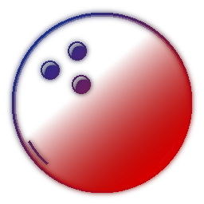

gscapee
he/him
beginner programmer | academic student crashout | greninja fan
- i am one massive fan of Greninja. don't question it. he's MY idol.
- i like bowling. i wanna play some more... my personal best is 136. my pro bowler idol is Norm Duke.
- i like mathematics. a lot. maybe too much.
- i'm a massive edm fan, especially in progressive house or house or really anything from early 2010(s).
- i like some aspects of tech minimalism and try to follow it. i wanna live a little simpler, like the old days.
- i program sometimes usually in
Python. - i do like playing games from time to time, love them puzzles..!
- my involvement is pretty random i'll admit, but i hope to make each event a memory to share.
- i'm like
50%stuck in 2017; i don't really know what's going on today. - i'm a clumsy guy and often on autopilot.
(t ⋅ cos(A + √t), t ⋅ sin(A + t2)) | A = [0, 25] & 0 < Astep < 0.01
involvements
utdallas | active
bpa chapter [redacted] | alumni (2022-2026)
uil computer science | inactive (2024)